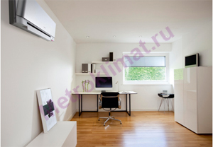

Кондиционеры Daikin - японские кондиционеры
| DAIKIN - это непревзойденное качество, высокие технологии в области производства климатических систем, это "модные" кондиционеры, постоянные исследования и внедрение новейших разработок.
Для рядового потребителя наверняка будет интересно узнать, что компания DAIKIN производит не только климатическую технику (фанкойлы, кондиционеры, мульти сплит-системы, а также хладагенты), но и
высокотехнологичные цифровые и электронные устройства, которые применяют в авиационной, атомной и даже космической отрасли! Нужно особо отметить тот факт, что все комплектующие для кондиционеров делают в Японии, что, конечно же, значительно повышает доверие к конечному продукту. Кроме того, DAIKIN дает гарантию на работу кондиционера 12 лет! Все мы знаем о том, что многие производители предпринимают максимально возможные усилия по охране окружающей среды. Так вот, именно Дайкин еще в 1993 году приняла "хартию глобальной охраны окружающей среды", согласно которой наибольшие приоритеты при производстве отдаются экологически чистым материалам и технологиям. Если вы ищете по настоящему надежный японский кондиционер - выбирайте DAIKIN! |  | |
Модель DAIKIN - FTXR/RXR (Ururu/Sarara) - впервые в мире сплит-система настенного типа может подавать свежий атмосферный воздух в помещение, а при необходимости и увлажнять его. При этом ёмкость, в которую пришлось бы периодически доливать воду, не нужна. Наружный блок берёт влагу из атмосферного воздуха. DAIKIN - FTXR осуществляет двухстадийную очистку воздуха – в наружном и внутреннем блоках. На первой стадии специальный катализатор разлагает неприятные запахи и удаляет выхлопные газы (NО, SO). Фильтр, расположенный в месте соединения гибкого рукава с внутренним блоком кондиционера, задерживает пыль и пыльцу. Вторая стадия очистки включает фотокаталитический фильтр и источник стримерного разряда.
Модель DAIKIN FTXS-K/RXS-K CTXS-K - новый дизайн лицевой панели внутреннего блока и пульта управления кондиционера. Модель DAIKIN FTXS-J/RXS-J - кондиционеры с увеличенным коэффициентом энергоэффективности. Модель DAIKIN FTX-JV/RX-JV - классические кондиционеры с уменьшенным энергопотреблением в режиме ожидания с 10 Вт до 2 Вт. Модель DAIKIN FTXN-K/RXN-K - кондиционеры с функцией автоматического горизонтального распределения воздуха вверх и вниз для эффективного распространения воздушного потока по помещению. | ||

| Защита от коррозии. В кондиционерах DAIKIN все важные детали внешнего блока надежно защищены от разрушения вследствии воздействия атмосферных условий (влага). | ||
| Автоматический выбор режима. В межсезонье (весной, осенью) колебания ночных и дневных температур особенно велики, и владельцу кондиционера приходится без конца переключать режимы. Данная функция сама переключает с обогрева на охлаждение. | ||
| Магнитоэлектрический двигатель. Повышенный КПД на низких оборотах в магнитоэлектрическом двигателе позволяет увеличить производительность компрессора. | ||
| Экономичный режим. Все знакомы с перегрузками в электросети. Бывает так, что необходимо сократить расход электроэнергии, здесь на помощь приходит экономичный режим, который сохраняет комфортность при распределении воздуха при использовании кондиционера DAIKIN. | ||
| Функция энергосбережения. Важным бытовым моментом является возможность сэкономить на электроэнергии. Эта функция позволяет не только снизить расход электричества, но и сохранить при этом комфортный микроклимат. | ||
| Инверторная технология. Инверторная технология позволит обеспечить комфортные микроклиматические условия в заданном помещении за короткий срок, а также будет поддерживать их на нужном уровне. Кроме того, опять же, это экономит электроэнергию, снижает уровень шума. | ||
| Непрерывное качание заслонок. Непрерывное качание заслонок автоматически изменяет циркуляцию воздуха в помещении с учётом режима работы - нагрев, охлаждение или осушка | ||
| Современный компрессор кондиционера. Эта разработка DAIKIN использует только безопасный хладагент, а также отличается низким уровнем вибрации и шума. | ||
| Двойной контроль температуры. Позволяет выбрать характер изменения температуры воздуха в помещении с помощью одного из термодатчиков, который размещают на проводном пульте управления или в месте воздухозабора внутреннего блока | ||
| Управление одним касанием. Нажатием одной лишь кнопки на пульте управления возвращает все настройки кондиционера, которые были применены до выключения. | ||
| Осушка воздуха. Эта функция позволяет поддерживать в помещении влажность от 35 до 60% без изменения температуры | ||
| Функция оттаивания инея. Зимой теплообменник во внешнем блоке может обледенеть, здесь то и пригодится функция оттайки инея. Это экономит электроэнергию. | ||
| Автоматический перезапуск. Если у вас отключат свет, то после его включения не нужно будет заново делать все настройки - они восстановятся автоматически! | ||
| Подмес воздуха с улицы. Кроме очищения, увлажнения и охлаждения воздуха его периодически нужно "менять", попросту говоря, проветривать. И функция подмеса свежего воздуха, безусловно, является весьма полезной. | ||
| Распределения воздуха. Исключает в помещении сквозняки за счёт создания равномерного температурного фона |